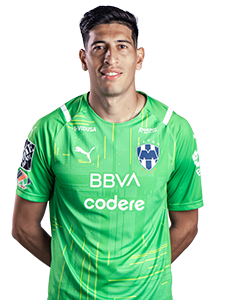

Esteban Andrada #1

Fecha de nacimiento: 26 de Enero de 1991
Lugar de nacimiento: San Martín, Mendoza, Argentina
Estatura: 1.94 m
Posición: PORTERO
Fecha de nacimiento: 26 de Enero de 1991
Lugar de nacimiento: San Martín, Mendoza, Argentina
Estatura: 1.94 m
Posición: PORTERO
Fecha de nacimiento: 24 de Febrero de 1997
Lugar de nacimiento: Hermosillo, Sonora
Estatura: 1.91 m
Posición: DEFENSA CENTRAL
Fecha de nacimiento: 05 de Junio de 1995
Lugar de nacimiento: Ahome, Sinaloa
Estatura: 1.84 m
Posición: MEDIO CENTRAL
Fecha de nacimiento: 05 de Marzo de 1991
Lugar de nacimiento: Mendoza, Argentina
Estatura: 1.90 m
Posición: DELANTERO CENTRAL
Fecha de nacimiento: 26 de Junio de 1992
Lugar de nacimiento: Desamparados, San José, Costa Rica
Estatura: 1.78 m
Posición: MEDIO OFENSIVO
Fecha de nacimiento: 15 de Diciembre de 1992
Lugar de nacimiento: Caá Catí, Corrientes, Argentina,
Estatura: 1.81 m
Posición: MEDIO DERECHO
Fecha de nacimiento: 23 de Febrero de 1997
Lugar de nacimiento: La Ruana, Michoacán, México
Estatura: 1.75 m
Posición: DEFENSA IZQUIERZO
Fecha de nacimiento: 26 de Enero de 1989
Lugar de nacimiento: Asunción, Paraguay
Estatura: 1.75 m
Posición: MEDIO CENTRAL
Fecha de nacimiento: 04 de Diciembre de 1996
Lugar de nacimiento: Santiago, Chile
Estatura: 1.80 m
Posición: DEFENSA CENTRAL
Fecha de nacimiento: 28 de Octubre de 1994
Lugar de nacimiento: Tampico, Tamaulipas
Estatura: 1.70 m
Posición: MEDIO IZQUIERDO
Fecha de nacimiento: 14 de Junio de 1992
Lugar de nacimiento: Antoquia, Colombia
Estatura: 1.80 m
Posición: DEFENSA DERECHO
Fecha de nacimiento: 25 de Junio de 1955
Lugar de nacimiento: Tampico, Tamaulipas
Estatura: 1.78 m
DIRECTOR TÉCNICO